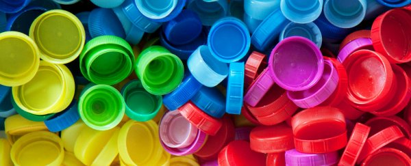

The Brain is perhaps the most amazing miracle of the human body. In the past, researchers believed that the brain was a machine. In this reality, brain chemistry is limited to the genetics of the individual. However, recent research in the areas of neuropsychology now are painting a different picture. The brain is now seen as more like plastic.
The brain being like plastic means the brain is able to mold. This means that people are not victims to their biology. However, the question remains as to what exactly does mold the brain? The answer is found in our thought life. Our thoughts shape our brains and even the expression of our genes.
This has profound implications for our mental health. No longer are people destined to a lifetime of medication and coping. Real healing is possible in our brain. The battle is between toxic thoughts and positive thoughts. Toxic thoughts grow as unhealthy trees in our minds that change the structure of the brain. Positive thoughts grow healthy trees in our minds and provide the reverse effect, they heal our brains.
Toxic Thoughts and Their Effects
| Monday | Tuesday | Wednesday | Thursday | Friday |
|---|---|---|---|---|
| Meditation | Working Out | Writing | Eating Healthy | Being Outside |
If you change your mind, you may just change your life.